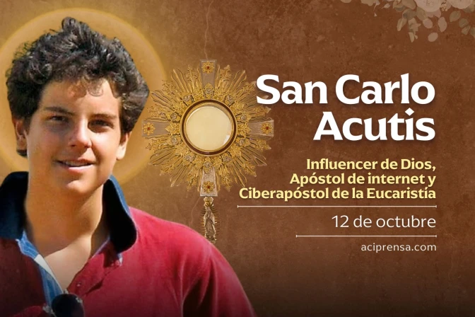
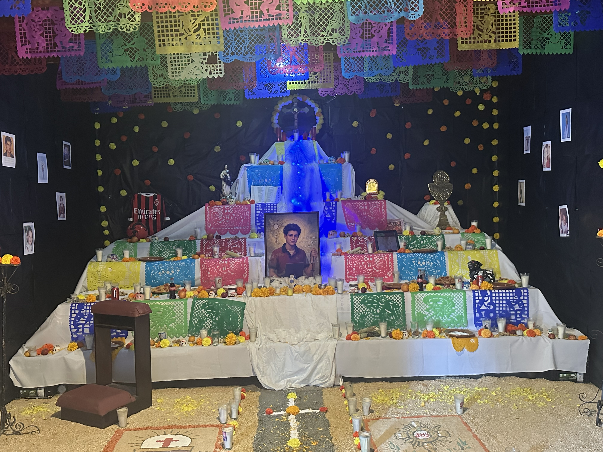

San Carlo Acutis
San Carlo Acutis (1991–2006) fue un joven italiano apasionado por la Eucaristía y la tecnología. Desde pequeño mostró un amor profundo por Jesús, asistiendo a misa diaria y rezando el Rosario con fervor. Usó sus conocimientos de informática para crear un sitio web que documenta los milagros eucarísticos en todo el mundo, convirtiéndose en un testimonio vivo de cómo la fe puede iluminar la era digital.
“La Eucaristía es mi autopista al Cielo.”
Vida y Vocación
Nació en Londres el 3 de mayo de 1991 y creció en Milán. Desde niño demostró sensibilidad espiritual y gran empatía hacia los pobres. Dedicaba su tiempo libre a ayudar en comedores sociales y a sus compañeros vulnerables. Su lema: “Estar siempre unido a Jesús, ese es mi proyecto de vida.”
Fe y Tecnología
Carlo veía Internet como un instrumento para evangelizar. Su sitio web sobre milagros eucarísticos sigue activo, inspirando a millones. Su ejemplo muestra que la santidad es posible en la vida digital sin renunciar a la fe.
Camino a la Santidad
A los 15 años, fue diagnosticado con leucemia. Ofreció su sufrimiento por la Iglesia con una paz que sorprendió a todos. Murió el 12 de octubre de 2006. Beatificado en 2020 y canonizado en 2025, es patrono de los jóvenes y del Internet.
Legado Espiritual
Su cuerpo reposa en Asís, con vestimenta cotidiana, recordando que la santidad está al alcance de todos. Su testimonio impulsa a los jóvenes a usar la tecnología responsablemente, participar de la Eucaristía y vivir la fe con valentía.
Altar de Recuerdo: San Carlo Acutis
Homenaje al santo que conectó la fe con la tecnología, inspirando a jóvenes de todo el mundo.
 Visitar su página oficial